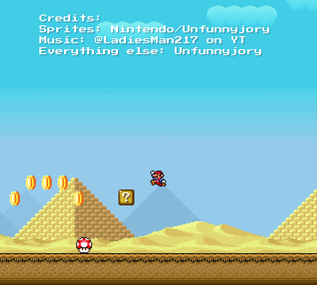
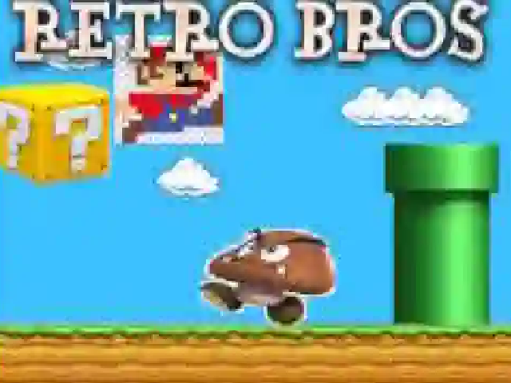
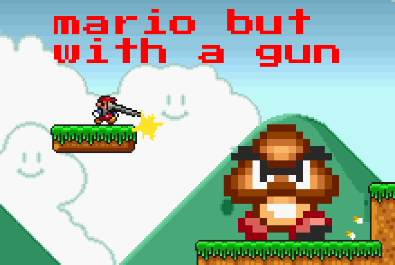
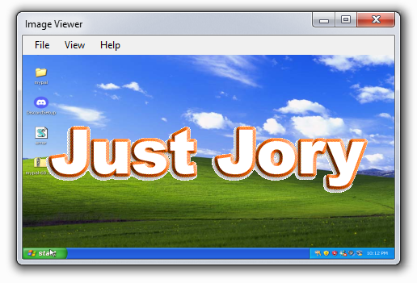

Super Mario Land All StarsCreated: November 18th 2024 | Last Updated: December 7th 2024 Super Mario Land All Stars is a Godot based project where I am remaking Super Mario Land in the All Stars feel and style. It is currently in a prototype state where there is literally no objective to the game. If you'd like to give any suggestions, feel free to email it to "orangejory08@gmail.com" |
 |
suoper retro brothersCreated: July 4th 1776 | Last Updated: ion even know hey guys check out my banger mario game |
 |
American Mario BrothersCreated: May 27th 2024 | Last Updated: July 17th 2024 American Mario Brothers was actually created in Game Maker Studio. (This was before I 100% switched over to Godot) This was originally going to be a remake of Super Mario All Stars but in a 3D style. But that was way too ambitious so I added guns. Then I completely forgot about it. |
 |
Image ViewerCreated: February 13th 2023 Created in Visual Basic, and Microsoft Forms, its literally just a image viewer with a custom background and a view viewing options. But... thats really it, its super basic. But honestly one of the more useful ones, especially for something I created in 8th grade |
 |
Template TitleCreated: January 1st 2000 | Last Updated: January 1st 2000 Lorem impsum get it????? |
|
© 2024 - 2025 Jory